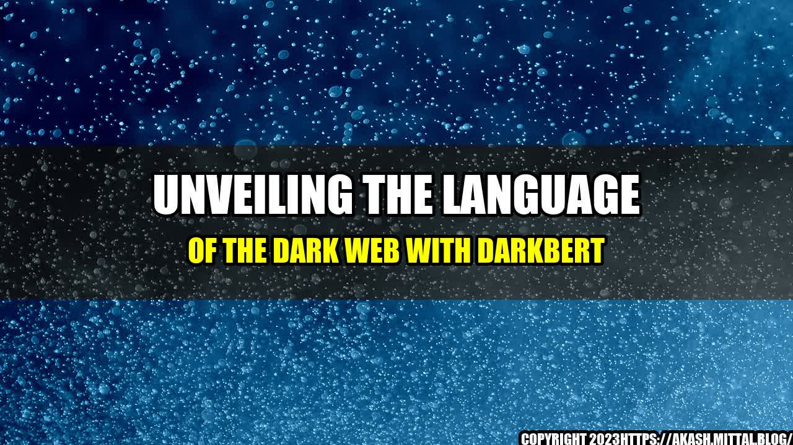

Unveiling The Language of The Dark Web with DarkBERT

Have you ever wondered what the language of the dark web sounds like? It may sound mysterious and intriguing, but, unfortunately, it's not all fun and games. In the dark web, people communicate in a language that is often cryptic, sophisticated, and difficult to comprehend. Nevertheless, with the help of DarkBERT, we can now start to understand and decode the complex language of the dark web.
An Interesting Story About Dark Web Language
Imagine you stumbled upon a dark web forum where people discuss illegal activities such as drugs, weapons, and human trafficking. As you read through the posts, you notice that the language being used is completely foreign to you. The terms being used are jargon, and the conversation seems to be coded. How can you possibly make sense of it?
You may be surprised to know that law enforcement authorities face this challenge daily. They need to decipher the code language used by criminals in the dark web in order to investigate and prosecute them. It's a daunting task, and it needs a powerful tool such as DarkBERT to accomplish.
Dark Web Language
Here are some examples of how language is used in the dark web:
- Acronyms: Criminals on the dark web use a lot of acronyms to shorten their messages. For example, CC means credit card, BTC means Bitcoin, and PGP means Pretty Good Privacy.
- Leetspeak: This is a type of language that replaces letters with numbers or symbols. For example, 3 can be used to replace the letter E, and @ can be used to replace the letter A.
- Onion Links: Dark web sites are often accessed through .onion links, which are encrypted URLs that are difficult to crack. Criminals use this to hide their activities from law enforcement.
- Hidden Services: The dark web is full of hidden services that provide illegal goods and services. These services often disguise themselves as legitimate businesses to attract customers and avoid detection.
An
Decoding The Cryptic Language of The Dark Web: A Look Inside DarkBERT
- DarkBERT is a powerful tool that can help law enforcement authorities decipher the language of the dark web.
- The language of the dark web is often cryptic, sophisticated, and difficult to comprehend without the help of technology.
- Understanding the language of the dark web is essential for investigating and prosecuting criminal activities on the dark web.
and Case Studies
Here are some practical tips for decoding the language of the dark web:
- Use a tool like DarkBERT to help with language translation.
- Learn the common acronyms and leetspeak of the dark web to better understand conversations.
- Stay up to date on the latest trends and hidden services on the dark web to stay ahead of criminal activities.
Reference URLs and Hashtags
- References:
- Hashtags: #DarkBERT #DarkWebLanguage #DecodingDarkWeb #Acronyms #Leetspeak #OnionLinks #HiddenServices #LawEnforcement
- Category: Technology
Curated by Team Akash.Mittal.Blog
Share on Twitter Share on LinkedIn